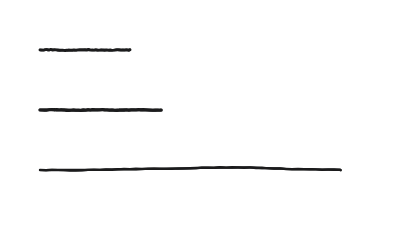
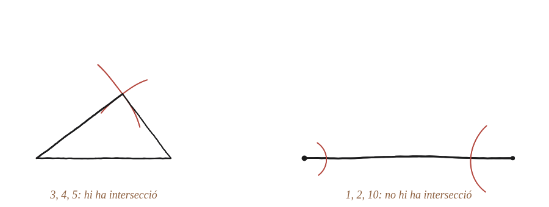

Qualsevol tria de tres longituds forma un triangle?

Una condició exacta, no només "no sempre"
La resposta no és només que no totes les ternes de longituds formen un triangle: cal trobar la condició exacta que separa els casos que sí en formen dels que no.
Un cas que falla, dibuixat amb compàs
Provant amb 1, 2, 10: traçant primer el segment de longitud 10, i després un arc de radi 1 des d'un extrem i un arc de radi 2 des de l'altre, els dos arcs són massa curts —cap dels dos arriba prou lluny per tocar l'altre. No hi ha cap punt que estigui alhora a distància 1 d'un extrem i a distància 2 de l'altre, si els extrems ja són a 10 de distància entre si.

Quan es toquen els dos arcs
Els dos arcs es toquen exactament quan la suma dels dos radis és més gran que la distància entre els seus centres —si la suma fos menor, els arcs quedarien massa curts (com a 1,2,10); si fos igual, es tocarien en un sol punt exactament sobre el segment, sense arribar a obrir cap triangle real.
Traduint-ho a a, b, c
Amb els tres costats a, b, c (c el més llarg), la condició és a+b > c: la suma dels dos costats més curts ha de superar el més llarg.
Val la pena veure per què n'hi ha prou amb una desigualtat i no cal comprovar-ne tres. En rigor calen les tres —a+b>c, a+c>b i b+c>a—, però si s'ordenen els costats de manera que c sigui el més llarg, les altres dues es compleixen soles: a+c > c ≥ b i b+c > c ≥ a. Per això el criteri pràctic és mirar només el costat més llarg contra la suma dels altres dos.
No, no qualsevol tria de tres longituds forma un triangle: cal que la suma dels dos costats més curts superi el més llarg (a+b>c). Quan aquesta suma és exactament igual al costat més llarg, el "triangle" es degenera en un segment amb els tres punts alineats, d'àrea zero.
Comprovació
3,4,5: 3+4=7>5 ✓, es forma triangle. 2,3,6: 2+3=5 < 6, no se'n forma cap. 1,2,10: 1+2=3 < 10, tampoc.